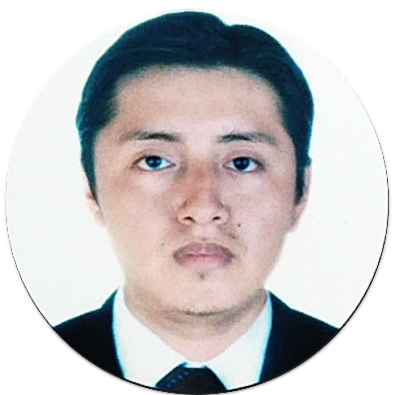

Cv: Diagnóstico Especializado
Dr. Josehp Christopher Castillo Cuenca

Médico Anátomo Patólogo
CMP: 56435 | RNE: 29091
Formación y Especialidad
- Universidad Nacional Mayor de San Marcos (UNMSM)
- Especialista en Anatomía Patológica
Experiencia Profesional Destacada
- Hospital Nacional Daniel Alcides Carrión: Médico Anátomo Patólogo (Desde 2016).
- Unilabs Pathology Diagnostics Services: Médico Anátomo Patólogo (2015 - 2023).
- Universidad Nacional Mayor de San Marcos: Docente Auxiliar y Tutor de Residentes.
Áreas de Alta Especialización
Investigación Internacional
Coautor de artículos en revistas indexadas de alto impacto como Virchows Archiv, contribuyendo a la descripción de nuevas entidades tumorales (Tiroblastoma).
"El diagnóstico patológico es el pilar fundamental para una medicina precisa y personalizada"
ContáctameUniversidad Nacional Mayor de San Marcos (UNMSM)
Médico Cirujano (2010) | CMP: 56435
Universidad Nacional Mayor de San Marcos (UNMSM)
Especialista en Anatomía Patológica (2016) | RNE: 29091
- Hospital Nacional Daniel Alcides Carrión: Médico Anátomo Patólogo (2016 - Actualidad).
- Unilabs Pathology Diagnostics Services: Médico Anátomo Patólogo (2015 - 2023).
- Universidad Nacional Mayor de San Marcos: Docente Auxiliar y Tutor de Residentes (2019 - Actualidad).
- Curso Internacional de Actualización en Patología Genitourinaria (2014)
- I Convención Nacional de Anatomía Patológica – ESSALUD (2014)
- V Jornada Peruana de Patología Oncológica, Trujillo (2018), Segundo premio caso clínico
- Curso Internacional de Patología Gastrointestinal (2018)
- Pathologist Training Workshop, Laboratorios Roche Argentina (2019)
- IX Congreso Internacional de Patología Uro-Oncológica (2019)
- XXXII Congreso Latinoamericano de Patología – SLAP (2019)
Artículos en Revistas Internacionales Indexadas
- "Malignant teratoid tumor of the thyroid gland... is the term
'thyroblastoma' more appropriate?"
Virchows Archiv (Vol. 477, 2020). Coautoría en estudio multicéntrico (Alemania, Canadá, Portugal, Arabia Saudita y Perú).
Artículos en Revistas Nacionales Indexadas
- "Percepción de estudiantes de medicina sobre la virtualización de
los cursos de patología..."
Anales de la Facultad de Medicina (Vol. 83, Nº 2, 2022). Coautor. - "Depósito fibrinoide perivelloso placentario masivo como causa de
restricción severa del crecimiento intrauterino"
Revista Peruana de Ginecología y Obstetricia (Vol. 66, Nº 2, 2020). Coautor.
Producción Científica y Congresos
- Congreso Científico Internacional FELSOCEM 2024 (Asunción, Paraguay): Asesor científico en casos clínicos ("Carcinoma adenoide quístico traqueal", "Carcinoma endometrioide").
- XXII Congreso Nacional de Anatomía Patológica: Presentación de casos "Nevus de Spitz Atípico" e "Histoplasmosis Diseminada Aguda en VIH".
Ponencias Destacadas
- XXX Curso de Fisiopatología Clínica (Marzo 2025): "Patología de la serie mieloide (Leucemias Agudas)" y "Patología de los ganglios linfáticos (Linfomas No Hodgkin)".
- Diagnóstico morfológico e inmunohistoquímico integral
- Análisis molecular de tejidos y células
- Experiencia en necropsias, biopsias intraoperatorias y estudios citológicos
- Capacitación docencia y tutoría en anatomía patológica pregrado y postgrado
- Manejo avanzado de plataformas académicas virtuales y presenciales
- Liderazgo y trabajo multidisciplinario
Responsable, dinámico, asertivo, con alta capacidad analítica, rapidez de aprendizaje, solidario y colaborativo en equipos de trabajo.